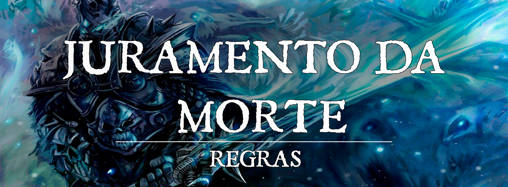

Juramento de Paladino: Juramento da Morte
A Subclasse "Quebrador de Juramento", é chamada de Juramento da Morte no Critical Bastards. O Juramento precisa de Canalização Divina, uma subclasse que usa a não-vida como força de poder para combater seus objetivos e seguir seus dogmas. Você cai em desgraça para que os outros não caiam. Não é necessário ser mal para fazer esse juramento, e ainda mais, NÃO DEVE SER MAL.
Dogmas:
Sobriedade. Há um poder sombrio que reside dentro de você, você não deve ceder a esses desejos mais sombrios.
Humanidade. Não se considere um monstro ou abominação. Você deve sempre manter sua humanidade.
Compreensão. Sua situação deve ser um lembrete constante. Seja gentil com aqueles que caíram em desgraça e ajude-os a voltar para a luz.
Deliberar. A escuridão dentro de sua alma só é contestada pela luz que também reside dentro. Mesmo nos tempos mais sombrios, deve ser a luz que brilha.
Magias do Juramento da Morte:
| Nível | Magias |
|---|---|
| 3 | Repreensão Infernal, Infligir Ferimentos |
| 5 | Coroa da Loucura, Escuridão |
| 9 | Animar Mortos, Rogar Maldição |
| 13 | Confusão, Praga |
| 17 | Contágio, Dominar Pessoa |
Controlar os Mortos-Vivos
No nível 3, Com uma ação e um uso de Canalizar Divindade, força morto-vivo que possa ver e que esteja a até 9m a fazer resistência de sabedoria. Caso falhe, o morto-vivo deve obedecer comandos do paladino pelas próximas 24 horas ou até ele usar essa habilidade novamente. Mortos-vivos com ND igual ou maior que o paladino são imunes.
Adicionalmente quando você realiza seu Juramento no nível 3, a sua Destruição Divína pode escolher a causar dano Necrótico ou Radiante.
Aspecto Temível
Também no nível 3, com uma ação e um uso de Canalizar Divindade, o anti-paladino afeta criaturas escolhidas a até 9m, forçando um teste de resistência de sabedoria caso possam vê-lo. Caso falhe, o oponente fica Assustado por 1 minuto. Criaturas afetadas que terminem o turno a mais de 9m doanti- paladino podem fazer um novo teste de resistência de sabedoria para encerrar o efeito.
Aura do Ódio
No nível 7, Você e demônios e mortos-vivos a sua escolha em até 3m recebem seu modificador de carisma em todas as jogadas de dano com armas corpo-a-corpo (mínimo +1). Uma criatura só pode se beneficiar desse efeito de um anti-paladino por vez. A partir do nível 18, essa aura alcança até 9m.
Resistência Sobrenatural
No nível 15, O paladino recebe resistência a dano cortante, concussivo e perfurante não-mágico.
Brilho Profano
No nível 20, uma vez por dia, com uma ação opaladino pode se cercar de aura de sombras por 1 minuto. A aura reduz luz brilhante a até 9m para luz baixa. Oponentes assustados pelo anti-paladino que comecem o turno na aura sofrem 4d10 psíquico. Adicionalmente, o paladino e criaturas que ele escolha na aura são cobertos por sombras mais profundas; oponentes que dependem de visão tem Desvantagem para ataques contra criaturas assim cobertas. Enquanto a aura dura, com uma ação bônus o paladino pode atacar uma criatura com um ataque mágico corpo-a-corpo que causa 3d10+ modificador de carisma em dano necrótico.